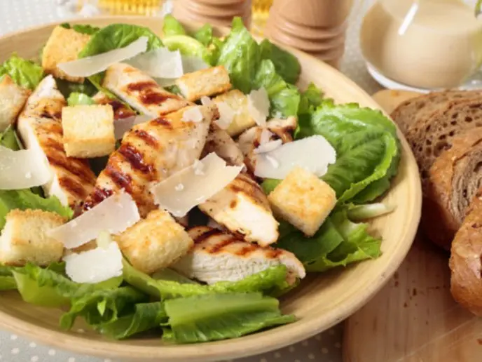
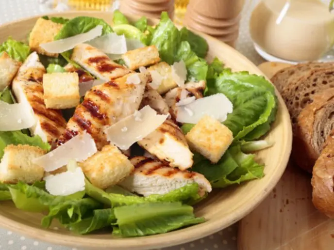
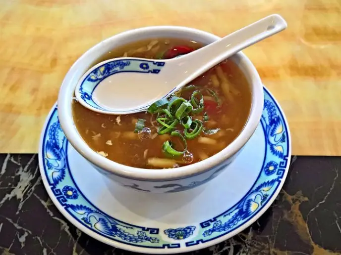

Recetas deliciosas
Recetas deliciosas de podtres
Bienvenido a mi página de recetas.

Bienvenido a mi página de recetas, donde encontrarás platos sabrosos y fáciles de preparar.
Ensalada de aguacate y queso

 

Esta ensalada es fresca, nutritiva y muy fácil de hacer. Solo necesitas los siguientes ingredientes:
- Lechuga
- Aguacate
- Queso fresco
- Tomates cherry
- Aceite de oliva
- Sal y pimienta
Para prepararla, solo tienes que lavar y cortar la lechuga, el aguacate, el queso y los tomates. Luego, mezcla todo en un bol y aliña con aceite, sal y pimienta al gusto. ¡Y ya está! Disfruta de esta deliciosa ensalada como entrante o como plato principal.
Sopa de tomate y albahaca
Esta sopa es caliente, cremosa y muy aromática. Solo necesitas los siguientes ingredientes:
- Tomates maduros
- Cebolla
- Ajo
- Caldo de verduras
- Nata líquida
- Albahaca fresca
- Aceite de oliva
- Sal y pimienta
Para prepararla, solo tienes que pelar y picar la cebolla y el ajo. Luego, sofríelos en una olla con un poco de aceite. Añade los tomates lavados y troceados y el caldo de verduras. Deja que hierva a fuego medio durante unos 20 minutos. Tritura la sopa con una batidora hasta que quede suave. Añade la nata, la sal y la pimienta al gusto. Sirve la sopa caliente con unas hojas de albahaca por encima. ¡Y ya está! Disfruta de esta deliciosa sopa como primer plato o como cena ligera.
Pizza casera de pepperoni
Esta pizza es crujiente, jugosa y muy sabrosa. Solo necesitas los siguientes ingredientes:
- Masa de pizza
- Salsa de tomate
- Queso mozzarella
- Pepperoni
- Orégano
Para prepararla, solo tienes que extender la masa de pizza sobre una bandeja de horno. Luego, cubre la masa con salsa de tomate, queso mozzarella rallado y pepperoni en rodajas. Espolvorea un poco de orégano por encima. Hornea la pizza en el horno precalentado a 180ºC durante unos 15 minutos o hasta que el queso se derrita y la masa se dore. ¡Y ya está! Disfruta de esta deliciosa pizza como plato principal o como aperitivo.
Postre de chocolate y frutos rojos

Este postre es dulce, cremoso y muy refrescante. Solo necesitas los siguientes ingredientes:
- Chocolate negro
- Nata montada
- Frutos rojos (fresas, frambuesas, arándanos, etc.)
- Menta fresca
Para prepararlo, solo tienes que derretir el chocolate negro al baño maría o en el microondas. Luego, deja que se enfríe un poco. En un vaso o un bol, pon una capa de nata montada, otra de chocolate derretido y otra de frutos rojos lavados y cortados. Repite las capas hasta llenar el vaso o el bol. Decora con unas hojas de menta por encima. ¡Y ya está! Disfruta de este delicioso postre como colofón a una buena comida.